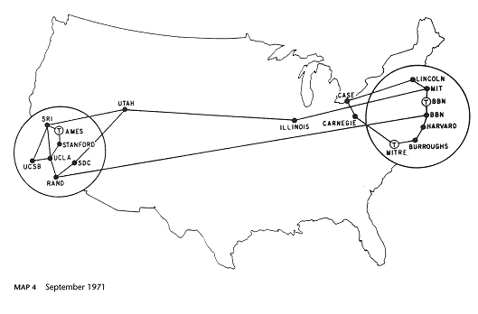

Ringraziamenti
- Questa presentazione utilizza anche materiale
proveniente da:
- presentazioni tenute da Ivan Herman,
W3C Semantic Web Activity Lead
- presentazioni e articoli scritti da F. R. A.
(Bob) Hopgood, Visiting Professor, School of
Technology, Oxford Brookes University
- pagine Web (Wikipedia e altre)
- contenuto nella documentazione tecnica
W3C
- Il materiale di questa presentazione può
essere riutilizzato nel rispetto dei diritti di
proprietà intellettuale, secondo la normale
prassi scientifica, e delle regole del
W3C
- Un ringraziamento a Jekpot per avermi
offerto l' opportunità di tenere questa
presentazione
Sono orgoglioso di ...

Tim Berners-Lee e Oreste Signore
L’invenzione del web
-
Non un Eureka
-
non la mitica mela di Newton
- la potenza di combinare le idee in modo
libero ("weblike") ...
- risposta a una sfida
- combinazione di idee e realizzazioni da parte anche di
molti altri
- finalmente un' idea nuova
Un processo di accrescimento, non la soluzione
lineare di una serie di problemi ben definiti.
Internet: 1969 e 1971


Ipertesto: Vannevar Bush e il Memex
1945: As We May Think (in Atlantic Monthly,
Luglio 1945)
(Una riproduzione dell' articolo a: http://www.multimedialab.be/doc/citations/bush_aswemaythink.pdf
o copia locale a: bush_aswemaythink)
A memex is a device in which an individual stores his
books, records and communications and which is
mechanized so that it may be consulted with exceeding
speed and flexibility. It is an enlarged
intimate supplement to his memory.
The memex "affords an immediate step, however, to
associative indexing, the basic idea of which
is a provision whereby any item may be caused at will
to select immediately and automatically another. This
is the essential feature of the memex. The process
of tying two items together is the important
thing."
Ipertesto: Ted Nelson e la definizione di ipertesto
(1965)
 A
body of written or pictorial material interconnected in a
complex way that it could not be conveniently represented
on paper. It may contain summaries or maps of its
contents and their interrelations; it may contain
annotations, additions and footnotes from scholars who
have examined it.
A
body of written or pictorial material interconnected in a
complex way that it could not be conveniently represented
on paper. It may contain summaries or maps of its
contents and their interrelations; it may contain
annotations, additions and footnotes from scholars who
have examined it.
Tim Berners-Lee
-
Biografia
di Tim
- Nel 1980, durante il primo soggiorno al CERN,
matura il concetto:
Suppose all the information stored on computers
everywhere were linked. Suppose I could program my
computer to create a space in which anything could be
linked to anything.
- La sfida dei gruppi di lavoro al CERN
- marzo 1989: "Information
Management: A Proposal"
Tre elementi fondamentali: universal resource
locator, protocollo per il fetch dei
documenti e document mark-up
…
…con il primo Web Browser

Il Web è ambiente sociale
“The Web is more a social creation than
a technical one. I designed it for a social effect - to
help people work together - and not as a
technical toy. The ultimate goal of the Web is to
support and improve our weblike existence in
the world.”
(Tim Berners-Lee - Weaving the Web, p. 123)
World Wide Web Consortium (W3C)

“To lead the World Wide Web to its full potential
by developing protocols and guidelines that ensure
long-term growth for the Web”
- Fondato da Tim Berners-Lee in 1994
- Definisce Recommendation aperte (Web Standards)
-
È un forum neutrale per creare consenso
sugli standard web
- Gli standard proposti non derivano da posizioni
dominanti sul mercato
- Gli obiettivi a lungo termine
-
Web for Everyone
-
Web on Everything
-
Knowledge Base, Advanced data searching and
sharing
-
Trust and Confidence
Alcune tappe fondamentali
-
1996: CSS1, PNG
-
1997: HTML 4.0
-
1998: DOM, SMIL 1.0, MathML, XML 1.0
-
1999: HTML 4.0.1, XPath, XSLT Version 1.0,
WCAG1.0
-
2000: XHTML™ Basic, DOM Level2,
XHTML™ 1.0, ATAG 1.0
-
2001: XSL 1.0, XML Schema, MathML 2.0
-
2002: UAAG 1.0
-
2003: SOAP Version 1.2, XPointer, SVG 1.1
-
2004: SSML Version 1.0, DOM Level 3, VoiceXML,
OWL, RDF
-
2005: SMIL 2.1
-
2006: XSL Version 1.1
-
2007: GRDDL, WSDL Version 2.0, SISR Version
1.0, XQuery 1.0, XPath 2.0, XSLT Version 2.0
-
2008: RDFa, CSS2 level 2, SPARQL
Il Web compie 20 anni. Dov'è il Semantic Web?
Il Web 2.0
Cos'è il Web 2.0
- Termine coniato da Tim O'Reilly, il
fondatore della nota casa editrice scientifica
- Caratteristiche essenziali di una applicazione Web
2.0:
- è una applicazione in ambiente
Web
- è un servizio, non un prodotto
- non è limitata ad un singolo prodotto
software o a una particolare macchina; è
aperta e condivisa
- gli utenti suddivisi per gruppi e l'
interazione sociale sono un componente della
sua organizzazione
- gli utenti forniscono contenuto e ne
incrementano il valore
-
Collaborative tagging (o folksonomy,
social classification, social
indexing)
-
Social software
- Contributo degli utenti ai contenuti (UGC - User
Generated Content)
Vantaggi e svantaggi del Web 2.0
-
Vantaggi
- utenti parte attiva, non fruitori
passivi
- utenti che creano e aggiungono contenuti
sviluppano l'abitudine e le
competenze per il lavoro di gruppo
- crescita del senso sociale
-
Svantaggi
- vengono meno le fonti tradizionali del
sapere
- l'autorevolezza può essere
oscurata dalla “freschezza”
- contenuto creato usando sistemi diversi
(podcast, blog, wiki, sistemi di chat, e altro
software per il social networking)
- difficoltà a ritrovare l'informazione
dispersa in vari luoghi
- utente dipendente dal sito (tecnologie
proprietarie)
- lavoro duplicato in caso di partecipazione a
più reti sociali
- rischio di perdita del lavoro in caso di
migrazione ad un altro servizio o chiusura di
quello utilizzato
- la legge di Metcalfe (il valore di una
rete è proporzionale al quadrato del numero di
nodi presenti)
Cos'è il Semantic Web
-
Il Web
-
- è nato per consentire la condivisione di
documenti
-
Il Semantic Web
-
- è un'estensione dei principi del Web dai
documenti ai dati
- fornisce una infrastruttura comune che consente
la condivisione e il riutilizzo dei
dati tra applicazioni, imprese e comunità.
- viene detto anche “web of
data” perché
- sul web è disponibile una enorme
quantità di dati
- i dati sono controllati dai programmi
applicativi, e ogni applicazione li gestisce
in maniera diversa
- è possible combinare le varie
informazioni, solo con un intervento
manuale
- consente a una persona, o a una
macchina, di iniziare le sue ricerche su un
database, e da lì accedere alle informazioni
contenute in un numero indefinito di altri database,
che sono connessi per il fatto di contenere
informazioni sulla stessa cosa.
Semantic Web: architettura e tecnologie

-
Il Semantic Web ...
-
- è un' infrastruttura basata su metadati
per poter svolgere ragionamenti sul Web
-
estende, non sostituisce il web attuale
-
Resource Description Framework (RDF)
-
- strumento base per la codifica, lo
scambio e il riutilizzo di metadati
strutturati
- consente l'interoperabilità tra
applicazioni che si scambiano sul web informazioni
machine-understandable
-
Web Ontology Language (OWL)
-
- linguaggio per descrivere
proprietà, vincoli, cardinalità, etc.
- permette di esportare ontologie in modo
interoperabile
L' integrazione dei dati: il ruolo delle tecnologie

Il Web compie 20 anni. Dov'è il Semantic Web?
Stato, previsioni,
strategie
Diffusione del Semantic Web
- Le tecnologie SW esistono ormai da qualche
anno…
- Ci sono specifiche stabili già dal
2004
- Possiamo disporre di molti tools, software,
sistemi, etc.
- Cominciano a comparire sulla scena le
applicazioni
- Allora, a che punto siamo, esattamente?
Il Semantic Web è solo ricerca accademica?
- Il SW ha certamente radici profonde nei risultati di
ricerca
- Ma ricordiamo la storia:
- il Web è nato al CERN…
- …inizialmente adottato dai fisici delle
alte energie…
- …poi dal mondo accademico in
generale…
- …poi dalle piccole imprese e dalle
start-up…
- solo più tardi sono entrate in scena le
"grosse imprese"!
- Il Semantic Web è ora allo stadio #4, e
prossimo allo stadio #5!
Le previsioni Gartner (2007)
By 2017, we expect the vision of the Semantic Web
[…] to coalesce […] and the majority of
Web pages are decorated with some form of semantic
hypertext.
By 2012, 80% of public Web sites will use some level of
semantic hypertext to create SW documents […]
15% of public Web sites will use more extensive
Semantic Web-based ontologies to create semantic
databases
(nota: “semantic hypertext” fa riferimento a
tecnologie quali RDFa, microformati con possibile
estrazione mediante GRDDL, etc.)
Fonte: “Finding and Exploiting Value in
Semantic Web Technologies on the Web”, Gartner
Research Report, May 2007
Breve guida al SW per il CEO: “le cose da
fare”
-
Partire con progetti piccoli
-
È bene verificare le tecnologie del Semantic Web
con progetti pilota, prima di investire risorse umane e
finanziarie notevoli.
-
Verificare le referenze
-
Molti system integrator non hanno reali competenze
sulle tecnologie del Semantic Web. È bene
acquisire persone che abbiano le necessarie competenze.
-
Prepararsi a una sfida formativa
-
Spesso occorre del tempo perché le persone
comprendano la tecnologia.[…]
-
Trovare un alleato
-
Può essere difficile individuare i benefici
potenziali, perciò è bene trovare
qualcuno che abbia un problema che può essere
risolto con il Semantic Web, e farne un partner.
Fonte: BusinessWeek Online, April 2007
Breve guida al SW per il CEO: “le cose da NON
fare”
-
Agire da soli
-
Il Semantic Web è complesso, ed è bene
avere aiuto da qualcuno […]
-
Trascurare gli aspetti di privacy
-
È possibile acquisire e correlare i dati dei
dipendenti, ma non bisogna dimenticare di definire le
linee guida per salvaguardare la privacy.
-
Aspettarsi la perfezione
-
Le tecnologie permettono di reperire e correlare le
informazioni in modo più rapido, ma non sono
perfette. Se le informazioni di partenza sono poco
affidabili, le tecnologie sono impotenti.
-
Essere impazienti
-
Uno dei primi ad adottare queste tecnologie, nella
NASA, afferma che i benefici potenziali possono
giustificare gli investimenti in tempo, denaro e
risorse, ma occorre un impegno pluriennale per nutrire
speranze di successo.
Fonte: BusinessWeek Online, April 2007
Il Web compie 20 anni. Dov'è il Semantic Web?
Riflessioni e
conclusioni
Una riflessione
“ The people who built the Internet and Web have
a real appreciation of the value of
individuals and the value of systems in which
individuals play their role, with both a firm
sense of their own identity and a firm sense
of some common good.
[…]
I was very lucky, in working at CERN, to be in an
environment that Unitarian Universalists and physicists
would equally appreciate: one of mutual
respect, and of building something very great
through collective effort that was well beyond
the means of any one person - without a huge
bureaucratic regime.
[…]
The system produced a weird and wonderful machine,
which needed care to maintain, but could take advantage
of the ingenuity, inspiration, and
intuition of individuals in a special way.
That, from the start, has been my goal for the
World Wide Web. ”
(Tim Berners-Lee - Weaving the Web, p. 208-209)
Conclusioni
- Il World Wide Web
- Frutto del lavoro di tutti, con forti
motivazioni tecniche e ideali
- L' importanza del contesto
- Il Semantic Web
- è un' evoluzione del web attuale che apre
prospettive enormi e facilita la
condivisione della conoscenza
- Le sue tecnologie (RDF, RDFS, OWL)
consentono di rappresentare,
esportare e condividere la
conoscenza in maniera interoperabile
- Le scelte strategiche, se tengono conto dell'
evoluzione della tecnologia, garantiscono la
salvaguardia dell' investimento
- Il W3C guida l' evoluzione del Web: attori o
spettatori?
Non chiedetevi: cosa può fare il web per
me?
…ma…  cosa posso fare io per il Web?
cosa posso fare io per il Web?